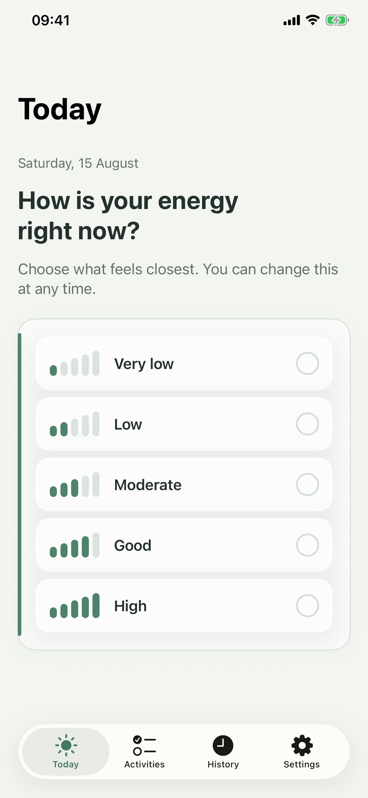
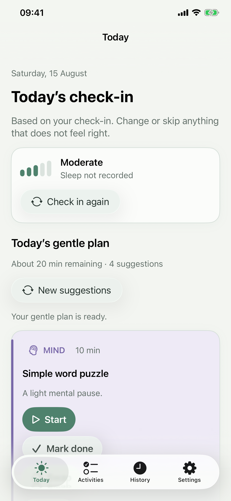
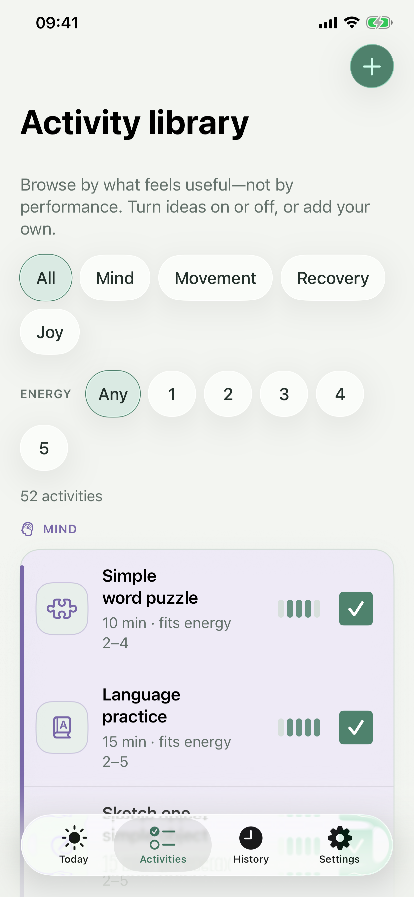
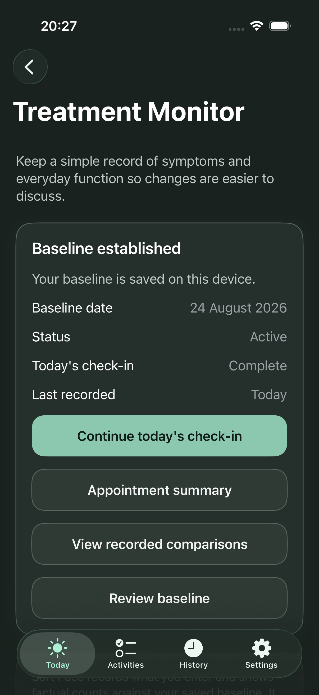
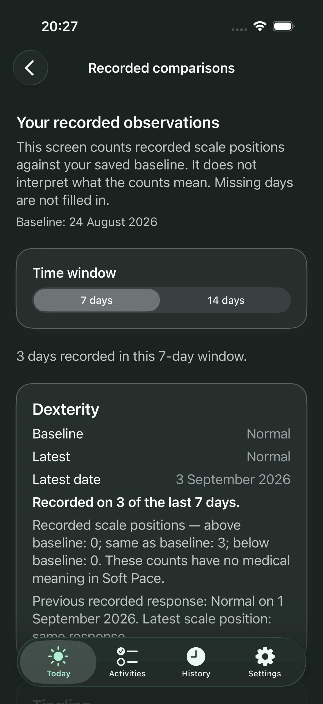
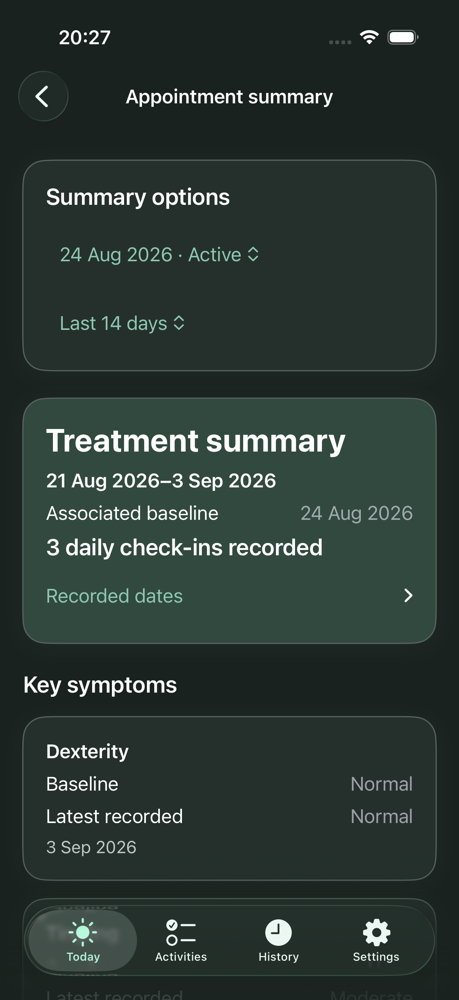
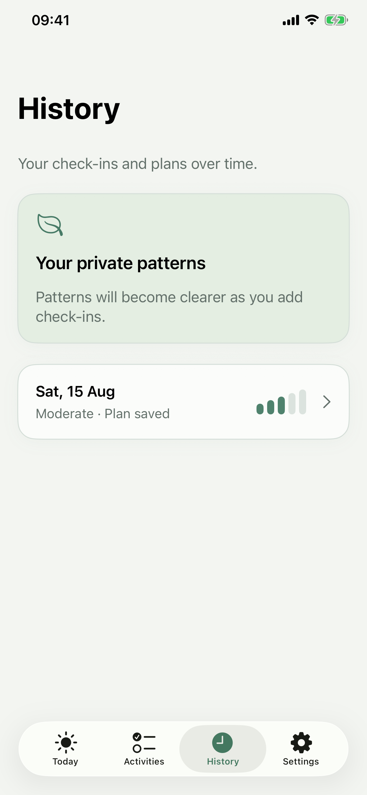

Meet today's energy
Start with a quick check-in. Soft Pace suggests manageable moments for mind, movement, recovery, and joy.
Small steps. Still you.
Soft Pace helps people going through chemotherapy for breast cancer shape a manageable day around the energy they have—without rigid schedules, streaks, judgement, or pressure.


Start with a quick check-in. Soft Pace suggests manageable moments for mind, movement, recovery, and joy.
Rest, swap, skip, or do a little. There is no streak to protect and no pressure to finish everything.
Treatment Monitor helps you stay aware of how your hands, feet, balance, and everyday tasks feel from day to day—and note even small changes you notice.
Your personal wellbeing records stay on your iPhone unless you choose to export a backup.
The day you actually have
Soft Pace combines flexible day planning, meaningful activities, private reflection, and day-to-day Treatment records to help you stay connected with what matters—without adding pressure.
Choose your current energy and, if useful, note sleep, mental clarity, how you feel, or a private thought.
See manageable suggestions for mind, movement, recovery, and joy, chosen around your energy and practical preferences.
Explore 52 starter activities, filter by energy and category, or create and edit activities that matter to you.
Start, time, adapt, swap, partially complete, skip, or rest—then add an optional reflection and look back in History.
Use Treatment Monitor to create a personal baseline, record daily observations, review factual counts, and prepare an appointment summary.

Still connected to what matters
Explore 52 starter activities across mind, movement, recovery, and joy—or add the small things from your own life that feel right today.
Treatment Monitor
Use a simple daily self-check to record how your hands, feet, balance, and everyday tasks feel. Soft Pace keeps the details together so you can look back against your own starting point and prepare for a care conversation.
Your own record · No score · No automated interpretation
See Treatment Monitor
These screens use fictional records to show how Soft Pace keeps daily observations together. Every comparison stays factual and separate—there is no combined score or automated interpretation.



Private by design
Check-ins, symptoms, plans, reflections, and Treatment records are stored locally on your iPhone. Soft Pace has no account, advertising, cross-app tracking, or automatic cloud synchronisation.
Optional anonymous feature-use analytics can be turned off in Settings.
Read the privacy policyYour record over time
Choose the last 7 days, last 14 days, or the period since your baseline. The summary shows recorded dates and individual answers without diagnosing, predicting, or recommending care.
General wellbeing · Not medical advice or clinical monitoring

Good to know
Yes. The complete app experience is free, with no subscription or locked core features.
No account is required. The complete experience works offline; only optional anonymous analytics need a connection.
No. Check-in answers, symptoms, notes, reflections, and Treatment records are not sent to the developer.
No. Soft Pace helps you record and remember the individual answers you enter. It shows factual counts against your own baseline, without a diagnosis, alert, or care recommendation.
Soft Pace is a general wellbeing tool for people with breast cancer who are going through chemotherapy. It does not provide medical advice, diagnosis, clinical monitoring, prevention, or treatment, and it does not replace advice from your healthcare team. Contact your care team about new, worsening, or concerning symptoms. For urgent or severe symptoms, contact local emergency services.